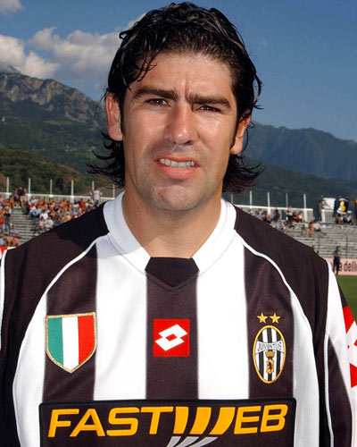

Curriculum Vitae
Marcelo Salas
Resumen
José Marcelo Salas Melinao (Temuco, Chile; 24 de diciembre de 1974), popularmente conocido como «El Matador», es un exfutbolista chileno, considerado el «mejor delantero de la historia de Chile» y el «mejor futbolista de todos los tiempos» de su país (alternando el primer puesto con Elías Figueroa). Destacó durante las décadas de 1990 y 2000 en clubes importantes como Universidad de Chile, River Plate, Lazio y Juventus. Fue capitán de la selección chilena, siendo, hasta el 2017, el máximo goleador con la que marcó 45 goles, 37 de manera absoluta (4 en Copas del Mundo, 18 en procesos clasificatorios a Copas del Mundo y 15 en amistosos) y 8 con la selección olímpica.
Datos Personales
- Nombre completo: José Marcelo Salas Melinao
- Lugar de nacimiento: Temuco, Chile
- Fecha de nacimiento: 24 de diciembre de 1974
Formación
Salas jugó por el cuadro amateur del Santos de Temuco, además de ser cadete de Deportes Temuco hasta marzo de 1990, cuando se trasladó a Santiago a las inferiores de Universidad de Chile, recomendado por el director técnico Salvador Biondi, que lo vio jugar en un cuadrangular amistoso con la camiseta de Temuco. Salas es el tercer goleador en etapas formativas del club Universidad de Chile junto a Omar Díaz con 118 conquistas en 8 torneos disputados, atrás de Leonel Sánchez y Jorge Socias. Debutó profesionalmente el 10 de abril de 1993, con triunfo 1-0 de la «U» en un partido válido por la Copa Chile ante Colchagua. Su primer gol profesional lo convirtió el 2 de enero de 1994, en una derrota ante Cobreloa en Calama, por la 29º fecha del Campeonato Nacional de 1993.
Para el siguiente año, en la Copa Chile 1994 era requisito el alinear un jugador sub-20, siendo los elegidos por el director técnico Arturo Salah para esos minutos Juan Silva, David Reyes y Salas. Para el primer partido, de visita ante Colo Colo, Silva se lesionó, por lo que Salas fue el elegido, partido en el que fue víctima del penal que significó el gol del empate para el cuadro azul. Luego vinieron goles ante Santiago Wanderers, Unión Española y Unión San Felipe. Finalmente, Salas se consolida en el partido ante Colo Colo en el Estadio Nacional, en donde realiza un hat-trick en la victoria por 4-1. Sus grandes actuaciones hicieron que rápidamente la afición universitaria le diera el apodo de "Matador" debido a su sangre fría a la hora de definir, inspirados además en la canción homónima del grupo musical argentino Los Fabulosos Cadillacs, que en esa época estaba de moda en Latinoamérica. Asimismo, fue en esta época cuando patentó su particular forma de celebrar los goles: hincaba una pierna, agachaba la cabeza, estiraba su brazo derecho y apuntaba con el dedo índice hacia el cielo.
En el cuadro azul logró dos títulos luego de 25 años de sequía del club:
el Campeonato Nacional del año 1994 y el Campeonato Nacional del año 1995,
siendo pieza fundamental en el ataque del equipo de la Universidad de Chile,
al ser el máximo goleador en ambas temporadas (27 y 17 goles respectivamente).
En tres temporadas dejó en claro su calidad goleadora, convirtiendo 76 goles.
El 13 de marzo de 1996 completó 100 partidos con la camiseta de la Universidad de Chile.
Además, en 1996 alcanza a jugar las semifinales de la Copa Libertadores 1996,
donde Universidad de Chile (por entonces dirigida por Miguel Ángel Russo)
fue eliminada de manera polémica por River Plate en el estadio Monumental de la ciudad de Buenos Aires.
Del mismo modo, no tardó en llamar la atención del cuerpo técnico de la selección chilena,
quienes veían al "Matador" como un compañero perfecto para Iván Zamorano.
Por lo mismo, lo empezaron a citar para los partidos clasificatorios al Mundial de fútbol de 1998.
Lo que más tarde, sería fundamental para que Chile pudiese ir a este evento, luego de 16 años de
no participar en el máximo torneo de selecciones nacionales del mundo, al darle la clasificación
marcando un gol en el triunfo 3-0 sobre Bolivia.
Más tarde, las grandes actuaciones en la Universidad de Chile y
en la selección chilena atrajo a varios clubes extranjeros, entre ellos Boca Juniors y River Plate.
Premios y Reconocimientos
Marcelo Salas obtuvo logros importantes en todos los clubes donde jugo, como también en la selección de Chile, algunos como:
Selección Chilena de Fútbol
- Máximo goleador histórico de la Selección Chilena (absoluta y olímpica) con 45 goles en 77 partidos oficiales, con un promedio de 0,58 goles por partido.
- Máximo goleador de la Selección Chilena en toda la historia de las Copas del Mundo, con 4 goles en 4 partidos (Dos a Italia, Austria y Brasil) 100% de efectividad.
- Máximo goleador de la Selección Chilena en fase de grupos de una Copa del Mundo, con 3 goles en 3 partidos (Dos a Italia y Austria) 100% de efectividad.
Universidad de Chile F.C.
- Mejor debut en la historia de un clásico contra Colo-Colo al anotar 3 goles en el triunfo de Universidad de Chile 4 a 1 del año 1994.
- Mejor debut en toda la historia en Universidad de Chile en su primer año de titular, temporada 1994 al marcar 41 goles (27 en campeonatos nacionales, 12 en Copa Chile y 2 en Copa Conmebol).
- Mejor debut en toda la historia en el fútbol chileno en su primer año como titular al anotar 43 goles (42 por Universidad de Chile y 1 por la selección chilena).
River Plate F.C.
- Considerado el mejor debut de un futbolista extranjero en River Plate, tras ingresar desde el banco y anotar un gol en el clásico frente a Boca Juniors en 1996.
- Autor de dos goles en el triunfo 3 a 0 de River Plate sobre Vélez Sarsfield dándole el título de Apertura 1996 a su equipo.
- Segundo máximo goleador de River Plate en el torneo de Apertura 1996.